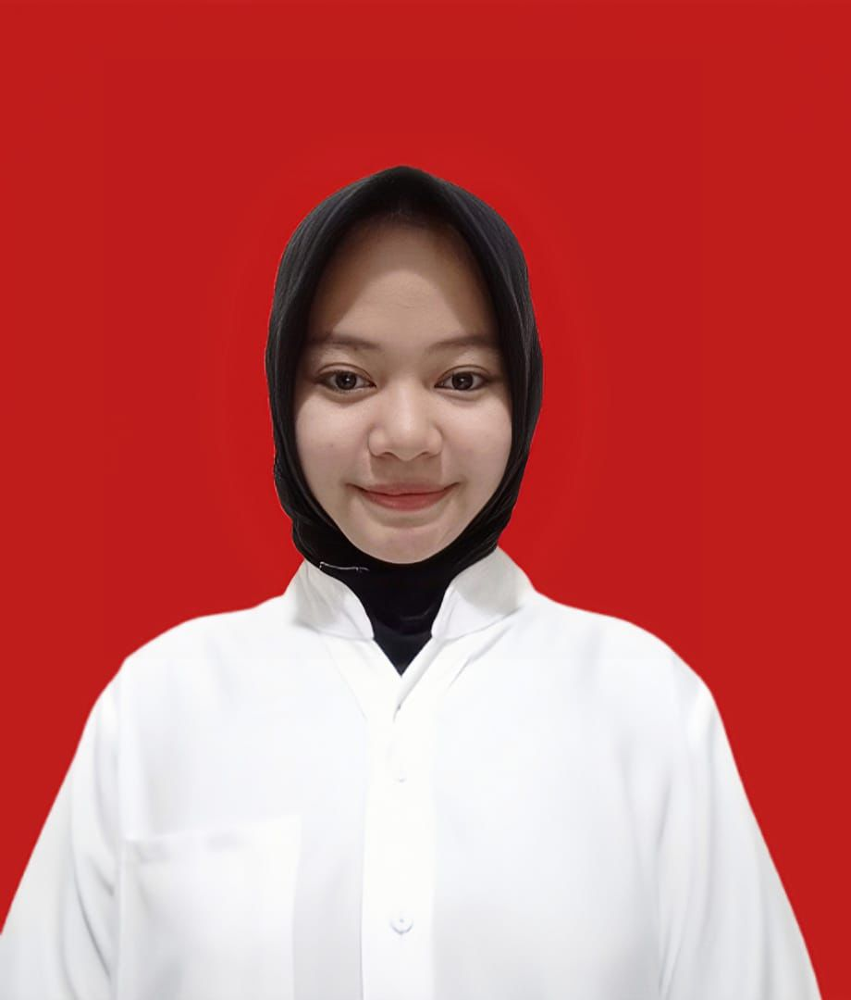

💻 Mahasiswa Sistem Informasi yang memiliki minat dalam bidang teknologi informasi, pengolahan data, fotografi, dan pengembangan sistem modern.
Lihat Portfolio2025 - Sekarang | Sistem Informasi
2022 - 2025
2019 - 2022
Membantu proses administrasi, pengolahan data kependudukan, serta pelayanan masyarakat selama Praktik Kerja Lapangan.
Melakukan dokumentasi kegiatan sekolah dan organisasi serta mengembangkan kemampuan fotografi.